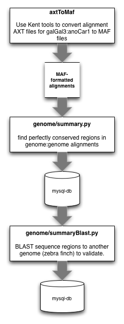
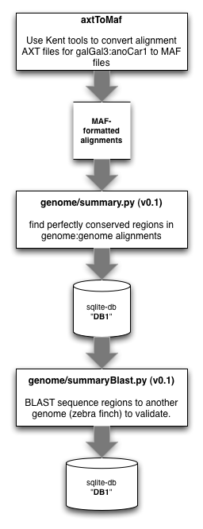

The current workflow that we use for identifying UCE regions between organisms is as follows:
First, we want to convert our target.query.net.axt files (from UCSC) to MAF formatted files:
axtToMaf ~/Data/alignments/target.query/target.query.net.axt \
~/Data/genomes/target/target.sizes \
~/Data/genomes/query/query.sizes \
~/Data/alignments/target.query/target.query.maf \
-tPrefix=target. -qPrefix=query.
Then, we want to scan these MAF formatted files to find blocks of perfectly conserved elements, of user-selectable size:
python genome/summary.py \
--configuration=db.conf \
--maf=~/Data/alignments/target.query/target.query.maf \
--consensus-length=30 \
--alignment-length=30 \
--metadata-key=target
--configuration <file> is the path to a configuration file containing the following:
[Database]
#Database parameters (MySQL)
DATABASE = my_db
USER = my_user
PASSWORD = my_password
--maf <file> takes the path of the MAF file created above
--consensus-length <int> takes the minimum length of alignments you are willing to consider
--alignment-length <int> takes the minimum length conserved region you are willing to accept
--metadata-key <name> takes the base organism (the target) for your comparisons.
We need to search these matches for those reads that match in more than one location. Before doing that, we need to pull sequences from the database of whatever length in which we are interested:
python get_conserved_sequence.py \
--configuration=db.conf \
--conserved-length=80 \
--output=sequences.fa
We may have inadvertently grabbed UCEs that are duplicated in the genomes we are using. We need to search for and avoid these duplicates. First, convert the fasta file from above into a 2bit file (requires fastaToTwoBit from Kent Source - also optional... lastz takes fasta files as input):
faToTwoBit sequences.fa sequences.2bit
Lastz the reads to themselves:
python alignment/easy_lastz.py \
--target=sequences.2bit \
--query=sequences.2bit \
--output=sequences.toSelf.lastz \
--coverage=50 \
--identity=80
easy_lastz.py differs from run_lastz.py in that easy_lastz.py is a single-processor wrapper around lastz, while run_last.py is meant for multiprocessing. For the purpose here, easy_lastz.py is a better choice because the data set we are processing is small, and multiprocessing would likely be slower due to the overhead of the additional calls involved.
Remove the duplicates (was remove_fish_cons_duplicates.py) by flipping the duplicate flag to 1 in the database table:
python flag_cons_duplicates.py \
--configuration=db.conf \
--input=sequences.toSelf.lastz
These will be avoided by subsequent calls to get_conserved_sequence.py.
After removing duplicates, we will create a fasta file of these conserved reads. The following pulls all conserved regions from the database that are longer than 80 bp, buffers them up to 180 base pairs (by adding 45 bp to the 5’ and 3’ flanks), and outputs the data to output.fa:
python genome/get_conserved_sequence.py \
--configuration=db.conf \
--conserved-length=80 \
--buffer-to=180 \
--twobit=/path/to/target/2bit/file.2bit \
--output=output.fa
The purpose here is to find the conserved regions initially located between two species in a third species. In comparison to previous versions of this workflow, we use lastz for this task, in place of BLAST (due to speed).
First, convert the fasta file to a 2bit file [optional]:
faToTwoBit output.fa output.2bit
Now, we will use run_lastz.py because we are aligning against a (potentially) large genomic sequence and benefit from the additional speed of multiprocessing. The run_lastz.py wrapper around lastz does this:
python alignment/run_lastz.py \
--target=/path/to/twobit/file/of/third/genome/sequence \
--query=/path/to/conserved/regions/from/above \
--output=/file/in/which/to/save/output.lastz \
--nprocs=6 \
--identity=80 \
--coverage=80 \
--huge
Replace the percent signs in the output file, in preparation for loading into the database:
sed 's/%//g' /file/in/which/to/save/output.lastz > /file/in/which/to/save/output.lastz.clean
Bring the contents of output.lastz.clean into a mysql table
create table conserved (
id mediumint unsigned not null AUTO_INCREMENT,
score int unsigned not null,
name1 varchar(100) not null,
strand1 varchar(1) not null,
zstart1 int unsigned not null,
end1 int unsigned not null,
length1 smallint unsigned not null,
name2 varchar(100) not null,
strand2 varchar(1) not null,
size2 smallint unsigned not null,
zstart2 smallint unsigned not null,
end2 smallint unsigned not null,
length2 smallint unsigned not null,
diff text not null,
cigar varchar(50) not null,
identity varchar(8),
percent_identity float,
continuity varchar(8),
percent_continuity float,
coverage varchar(8),
percent_coverage float,
PRIMARY KEY (id),
INDEX name2 (name2)) ENGINE=InnoDB;
LOAD DATA INFILE 'output.lastz.clean' INTO TABLE conserved (score, name1,
strand1, zstart1, end1, length1, name2, strand2, zstart2, end2, length2,
diff, cigar, identity, percent_identity, continuity, percent_continuity,
coverage, percent_coverage);
We now have our candidate set of UCEs.
The older workflow that we used for identifying UCE regions between organisms was as follows:
The older workflow depended on the pp and sqlite3 modules of python. As you can see above, we have since ported the code to use mysql as the backend while also using the multiprocessing module in place of pp.
First, we want to convert our target.query.net.axt files (from UCSC) to MAF formatted files:
axtToMaf ~/Data/alignments/target.query/target.query.net.axt \
~/Data/genomes/target/target.sizes \
~/Data/genomes/query/query.sizes \
~/Data/alignments/target.query/target.query.maf \
-tPrefix=target. -qPrefix=query.
Then, we want to scan these MAF formatted files to find blocks of perfectly conserved elements, of user-selectable size:
python genome/summary.py
Warning
In contrast to the current workflow, all of the current user-selected variables in summary.py were hard-coded into the body of the code.
directory = '/Users/bcf/Git/seqcap/'
cpu = 1
dBase = 'probe.sqlite'
def processor(input, minConsensusLength=60, minAlignLength=60, metadataKey='galGal3'):
We now need to scan the conserved sequences we’ve located against an additional genome to validate:
python genome/summaryBlast.py
Warning
In contrast to the current workflow, all of the current user-selected variables in summaryBlast.py are hard-coded into the body of the code.
First, the path to the database holding the conserved reads and accepting the results from BLAST (line 149)
sqlDb = 'probe.sqlite'
Second, the paths to the BLAST database and blastall executable
blastDb = '/Users/bcf/lib/blast/data/taeGut3'
blastExe = '/Users/bcf/bin/blast-2.2.18/bin/blastall'
After identifying conserved sequence present in a trio of species, we need to flag the perfectly duplicated reads in the cons table.
python duplicateFinder.py
After filtering out duplicates (using a flag), we need to get the conserved reads out of the database. Because some of them are shorter than 120 bp, we will buffer those that are shorter than 120 bp up to 120 bp by adding sequence to the 5’ and 3’ ends (from the target genome we started with):
python sureSelectSequenceBuffer.py
Feed this file to sureSelectTiler.py, which does the tiling, the counting of masked bases, GC content determination, blasting of probes to themselves, etc. the output of which goes into a csv file.
this file gets imported to the db, and then we run sureSelectSeqName.py on the dbase table (sureselect) that is created after importing the csv file as a table above.
Then ran sureSelectSeqName.py to get sureselect probes into dbase and add metadata.